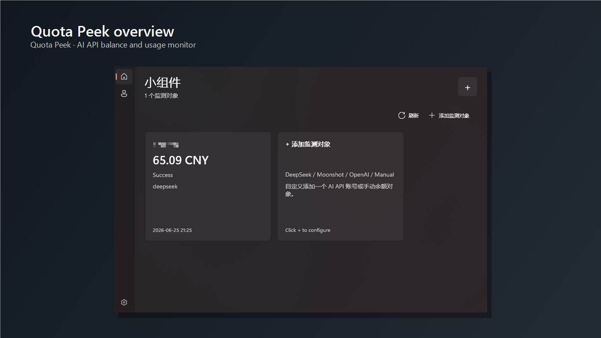
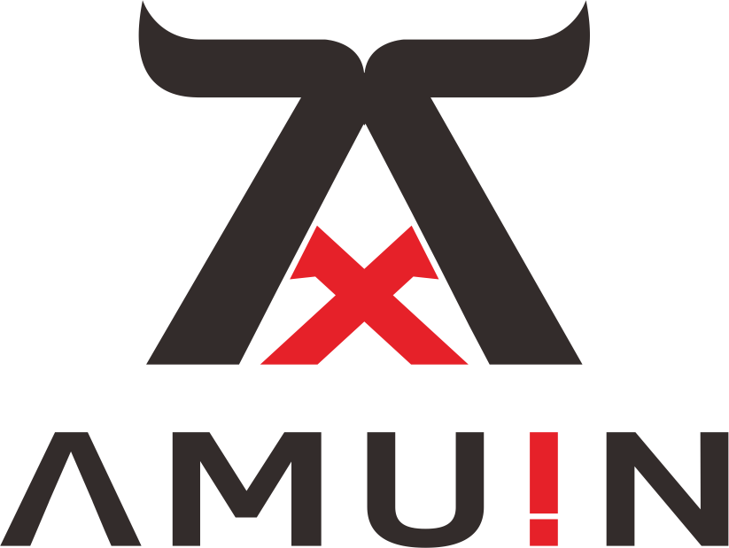
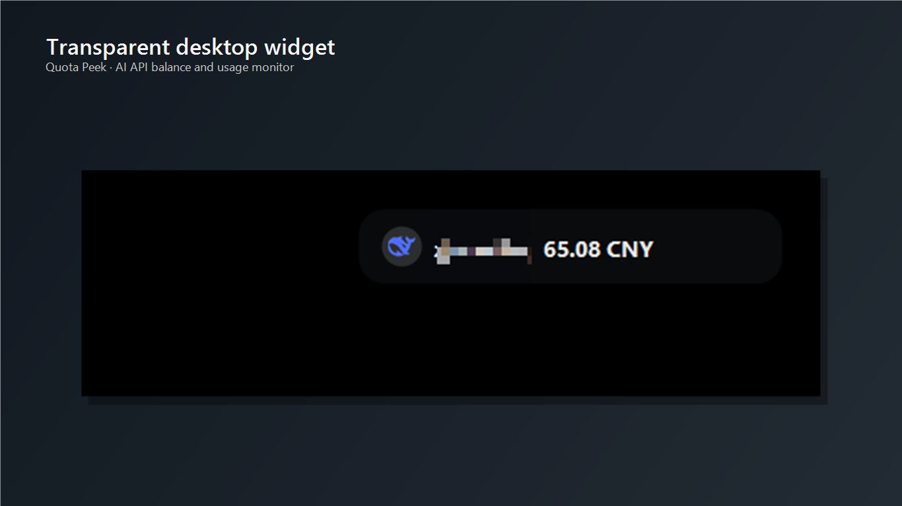

Overview
Main dashboard
Monitor cards show provider state, current balance or spend snapshot, and the latest update time in a compact Windows-native layout.


Quota PeekWindows AI budget monitor
Quota Peek brings AI billing checks into Windows widgets, tray summaries, and a floating desktop strip so balance and spend stay visible while you work.
Overview
Monitor cards show provider state, current balance or spend snapshot, and the latest update time in a compact Windows-native layout.

Desktop strip
The floating strip is designed for a quick read on the desktop without turning the app into a full-time foreground window.

Support
Email: support@amuin.com
Publisher: Amuin
Privacy
API keys and monitor settings stay on the user's device. The app does not operate a relay service for billing checks in the current release.
Product scope
Quota Peek focuses on balance, usage, and cost monitoring. It does not proxy prompts or model responses.